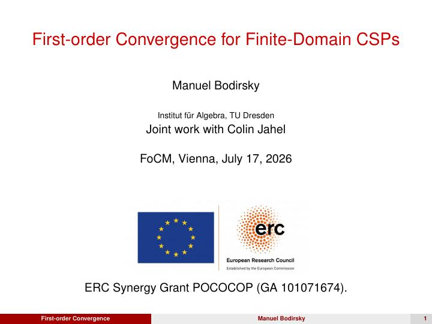
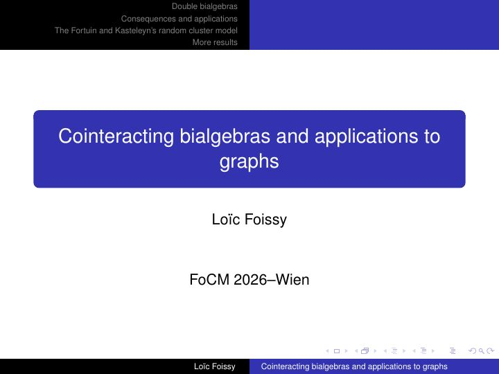
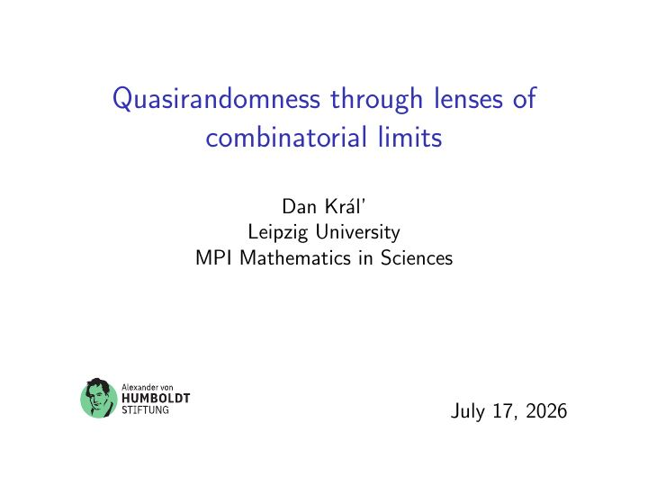
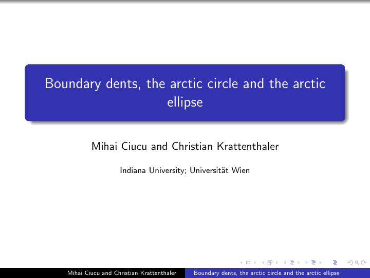
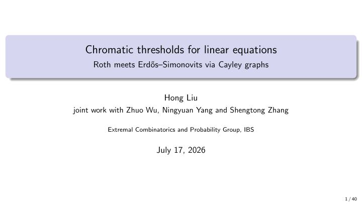
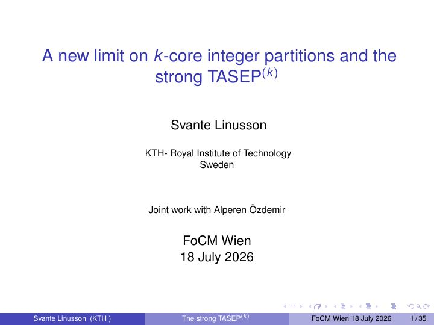
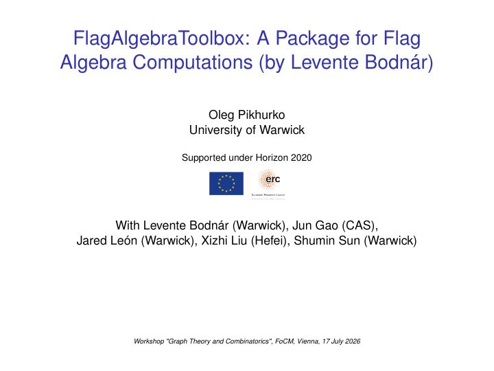
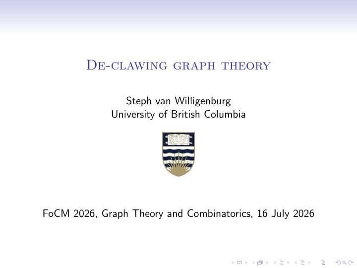
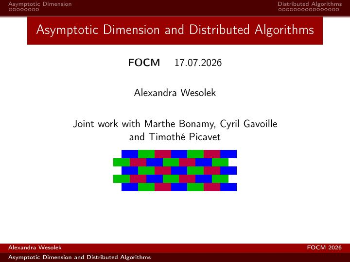
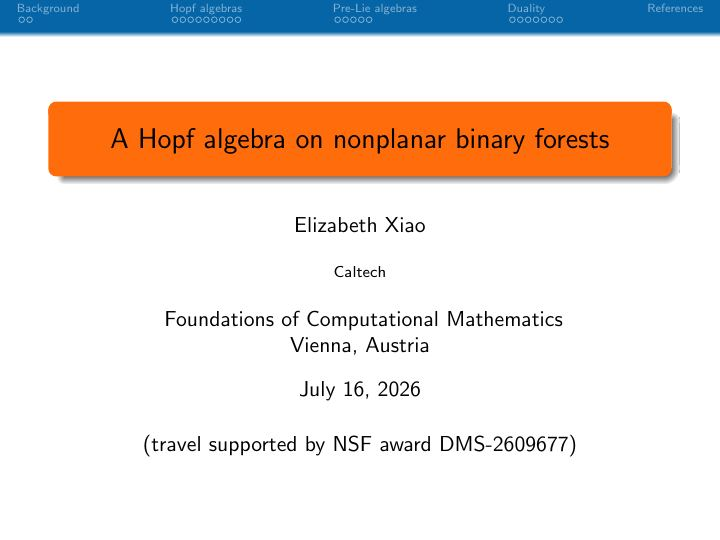

Manuel Bodirsky
TU Dresden
CSPs have first-order convergence

Loïc Foissy
Université du Littoral Côte d’Opale
Cointeracting bialgebras and applications to graphs

Daniel Kráľ
Leipzig University & MPI Leipzig
Quasirandomness through lenses of combinatorial limits

Christian Krattenthaler
University of Vienna
Boundary dents, the arctic circle and the arctic ellipse

Hong Liu
Institute for Basic Science
Chromatic thresholds for linear equations and recurrence

Svante Linusson
KTH Royal Institute of Technology
A new limit on k-core integer partitions and the strong TASEP(k)

Oleg Pikhurko
University of Warwick
FlagAlgebraToolbox: A package for flag algebra computations

Stephanie van Willigenburg
University of British Columbia
De-clawing graph theory

Alexandra Wesolek
University of Bordeaux
The use of asymptotic dimension in LOCAL algorithms

Elizabeth Xiao
Caltech